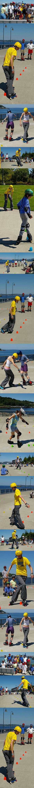
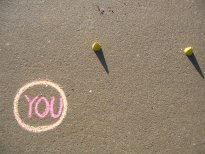
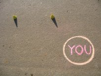
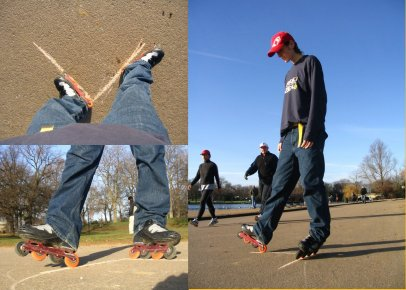
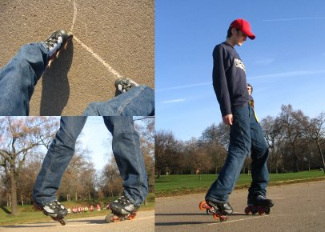

FREESTYLE SLALOM: LEARNING 'CRAZY'
Do make sure you can criss-cross forwards
& backwards before trying the crazy. Just one cone is absolutely
fine. There is no need to be able to repeat the move over any number
of cones, or be able to do it at any speed. Just be able to cross and
uncross your feet to go over a cone.
Ideally, you will prefer passing over the cone with the same foot
first when going both forwards & backwards. Ie, if you like having
your right foot in front when you criss-cross forwards, then in an idea
world you would prefer having your right foot behind you when going
backwards (so it is the first to cross the cone again).
This isn't the case with you? it rarely is. But don't fret, because
pretty much all of us had this problem. You need to choose - which one
are you most able to change? Usually it is the forwards criss-cross, but
not always. So before going any further, go and try them out - you'll
need to know your side for the next bit.
In skating, 'right footed' and 'left footed' are impossible to define
for slalom, as there is often little connection with how people prefer
to do one move, and how they prefer to do another, so for the purposes
of this tutorial, if you prefer to cross the cone with your RIGHT foot
first, you are RIGHT FOOTED. And vice versa. Read that sentence again.
And then thrice more. If you are reading a print out, highlight it. If
not, tattoo the back of your hand.
This isn't usually such an issue, as I'm right there, but I'm
having visions of people stood at the start of a slalom line with a
print out of this tutorial in one hand, dedicatedly following all the
instructions, but getting it totally wrong because they are doing it in
the wrong direction for the way their feet are going. So I suggest you
take the opportunity to draw yourself a diagram.
If you are RIGHT footed, you will stand at the front of the cone line
with the neat line of cones extending away to your LEFT. You will be
standing about a half spacing to the right of the end of the cones, and
about a half cone spacing back from the line. So the first cone is a 45
degree angle to the way you are facing.
If you are LEFT footed (big cheer - we're not so common), the cones will be extending out to your RIGHT.


Left footed is on the left, and right footed is on the right in these pictures
We're now ready to get started. The move itself repeats every 2
cones, so once we're done with the first 2 it's just a case of
repeating. Those two cones can be split into 4 steps. The good news is
that one of the steps is forwards crisscross, and one is backwards
crisscross. You're half way there!
…with a difference. Usually you will be travelling along the length
of the cones, but here you will be travelling at 45 degrees to the
length of the cones. You want to end up half way between the 1st two
cones, but the other side of them, so they are behind you. If you are
RIGHT footed you will be travelling towards your LEFT and vice versa.
So. Go do it. And make sure you uncross your feet without picking any of them up. That's vital.
It's the same as usual isn't it. But this time, stop after doing it. Stop just where I told you I wanted you to end up.
Difficulty?
If you cross over a cone and uncross, without doing anything at the end,
you're going to carry on. You're not doing anything wrong - you're just
not doing anything to make you stop. That thing is the second step.
Move away from the cones. There is no need to use them whilst we
practice this step. If you have chalk, draw a V on the ground, about 45
degrees angle, an about the length of a long ruler (30cm).
Place your left foot (right/left footedness doesn't matter for this bit)
on the bottom section of the left hand arm, along with most of your
weight. Now put your right heel wheel on the other arm of the V -
further up the V.

Feeling comfortable? LOL
Now I want you to swap. So your Right foot comes back onto all 4 wheels,
down in the bottom of the V, and underneath your body, and as you do
that, your left foot takes a trip up the left arm of the V and ends up
on just the heel wheel. It should look a little like a very bad version
of kazachoks. Keep swapping back & forth for a while.
Click
here for a short video clip of this
If you find that easy because you've been doing it for years of have
great edge control, I'm just about to patronise you, so move to step 3 -
but do make sure you have this step perfect, as step 4 relies on this.
For those of you that found yourselves sliding forwards out of the V, or
yelling 'but I have a heelbrake you fool!!!!' at me, then read on.
If you have a heelbrake, and don't want to remove it, that's fine, but
you will need to be careful during this bit of the move - either don't
tilt your foot far up onto the heel, or do it all with all 8 wheels on
the ground - but you need to be extra extra careful to have pretty much
all your weight on the supporting foot, and not on the one that would
normally be on the heel. I ask you to go onto the heel of the
non-supporting foot because your body will automatically position its
weight over the foot with all 4 wheels on the ground.
If you are riding out of the V, then we need to look at your edging.
Your feet should be on their outside edges, so you look like you're
riding a horse. Bowlegged even. You will need to bend your knees for
this, and if it helps you to get the correct sensation of being on your
outside edges for this move, you can undo your top buckles but be sure
to do them back up before attempting the cones again. Try it again. You
should find that you have a new feeling of 'clunk-click' when your feet
change position - you will know when it feels right.
The
other thing that people commonly do wrong with this step, is
to bring in one foot so they are both at the base of the V (ballet
position 1) before letting the other foot travel out. Don't fall into
this trap. Its nice and cosy, and you can hardly make out the edges of
your comfort zone as they are so far away, but you need to sort this
out. As one foot is coming in, the other foot is going out. You will
feel your hips having to rise & fall to allow it, and it is this
rise & fall that gives you the 'clunk-click' feeling.
Once you are bored stiff, go back to the cones.
Now do step 1 again, and in order to stop, do step 2. When you uncross
from the forwards criss-cross you will be in a V position just like the
start of step 2 (with your weight on your left foot if you are RIGHT
footed, and vice versa), so now just switch everything over (step 2) and
you will find yourself halted, and ready to travel backwards over the
next cone.
At the end of step 2, you will have your feet in a V and on the
outside edges of your skates, so they will be in the perfect position to
travel backwards, crossing over the 2nd cone.
Have a go a few times, putting these 3 moves together.
A common problem is not being able to just slip neatly and effortlessly
back over the 2nd cone. That's because you're still for step 2, and
you're trying to cross your feet over as a way of getting going -
essentially a stupid thing to be trying to do with 4 wheels on each
foot. Its not because you're crap. After practice it wont be a problem
because you will not actually lose much momentum during the forwards to
backwards transition in step 2 - you will start to find that the weight
shift itself gives you the momentum you need. In the meantime, its hello
to new muscles. I make pretty much everyone stand there after step 2,
and literally nudge themselves bit by bit back over the cone - you look a
little like you're trying to hump an unseen object, especially with the
grunting, but just remember how cool you'll look when you can do the
crazy.
Once you can get back over the cone, with however little dignity, you
are ready for step 4 - but make sure you are actually uncrossing your
feet after the cone without picking any foot up. This is very important.
You are learning, so I will let you drag your toe wheel across if you
must, but NEVER let the foot leave the ground completely.
This is the hardest step, but step 2 will have set you up with most of the technical bits.
Leave the cones again, and return to your V. Do the step 2 transition a
couple of times as warm up, then turn 180 degrees so the V is upside
down. Now put your left foot at the peak of the left arm, and your right
foot further down the right arm, just on its toe wheel. Swap as before.

Everything is the same as for step 2 - the weight being on the
supporting foot, the outside edges etc etc, except this time its much
much harder. The reason it was so important to get step 2 right was to
set you up for step 4.
Click
here for a short video clip of this
It will require a lot of practice, but most problems can be sorted out using the advice from step 2.
Once you are semi-comfortable with this weight transition, return to the
cones in the knowledge that whenever you see anyone doing any freestyle
move where it looks like their legs are made of rubber, it is because
they are using this weight transition. This is where it all comes from.
Back on the cones, fit it in just as you did with step 2 (when you have
crossed the cone and uncrossed your feet, the weight should be on the
left foot if you are RIGHT footed and vice versa). And then continue
forwards over the 3rd cone as you start the whole cycle again. It is
usually very hard for people to propel themselves over this cone, and my
advice is just as unwelcome as it was earlier - budge yourself over bit
by bit and carry on. It will be easier the 2nd time, easier still on
the 3rd time and so on. If you don't go through this now, you'll never
find it much easier. We all did it. I still remember when I could only
do the crazy whilst facing down a slope.